<!DOCTYPE html>
<html>
<head><meta name="generator" content="Hexo 3.9.0">
  <meta charset="utf-8">
  

  
  <title>Matlab R2014a 安装教程 | 义修经验总结 - 计算机协会</title>
  <meta name="viewport" content="width=device-width, initial-scale=1, maximum-scale=1">
  <meta name="description" content="Matlab 2014 安装教程本文作者：梅健本文编辑：林志杨">
<meta name="keywords" content="软件安装">
<meta property="og:type" content="article">
<meta property="og:title" content="Matlab R2014a 安装教程">
<meta property="og:url" content="http://help.cqjtuJX.club/2019/08/30/Matlab-2014-安装教程/index.html">
<meta property="og:site_name" content="义修经验总结 - 计算机协会">
<meta property="og:description" content="Matlab 2014 安装教程本文作者：梅健本文编辑：林志杨">
<meta property="og:locale" content="zh-cn">
<meta property="og:image" content="http://help.cqjtujx.club/2019/08/30/Matlab-2014-安装教程/1.png">
<meta property="og:image" content="http://help.cqjtujx.club/2019/08/30/Matlab-2014-安装教程/2.png">
<meta property="og:image" content="http://help.cqjtujx.club/2019/08/30/Matlab-2014-安装教程/3.png">
<meta property="og:image" content="http://help.cqjtujx.club/2019/08/30/Matlab-2014-安装教程/4.png">
<meta property="og:image" content="http://help.cqjtujx.club/2019/08/30/Matlab-2014-安装教程/5.png">
<meta property="og:image" content="http://help.cqjtujx.club/2019/08/30/Matlab-2014-安装教程/6.png">
<meta property="og:image" content="http://help.cqjtujx.club/2019/08/30/Matlab-2014-安装教程/7.png">
<meta property="og:image" content="http://help.cqjtujx.club/2019/08/30/Matlab-2014-安装教程/8.png">
<meta property="og:image" content="http://help.cqjtujx.club/2019/08/30/Matlab-2014-安装教程/9.png">
<meta property="og:image" content="http://help.cqjtujx.club/2019/08/30/Matlab-2014-安装教程/10.png">
<meta property="og:image" content="http://help.cqjtujx.club/2019/08/30/Matlab-2014-安装教程/11.png">
<meta property="og:image" content="http://help.cqjtujx.club/2019/08/30/Matlab-2014-安装教程/12.png">
<meta property="og:image" content="http://help.cqjtujx.club/2019/08/30/Matlab-2014-安装教程/13.png">
<meta property="og:image" content="http://help.cqjtujx.club/2019/08/30/Matlab-2014-安装教程/14.png">
<meta property="og:image" content="http://help.cqjtujx.club/2019/08/30/Matlab-2014-安装教程/15.png">
<meta property="og:image" content="http://help.cqjtujx.club/2019/08/30/Matlab-2014-安装教程/16.png">
<meta property="og:image" content="http://help.cqjtujx.club/2019/08/30/Matlab-2014-安装教程/17.png">
<meta property="og:image" content="http://help.cqjtujx.club/2019/08/30/Matlab-2014-安装教程/18.png">
<meta property="og:image" content="http://help.cqjtujx.club/2019/08/30/Matlab-2014-安装教程/19.png">
<meta property="og:image" content="http://help.cqjtujx.club/2019/08/30/Matlab-2014-安装教程/20.png">
<meta property="og:updated_time" content="2019-08-31T03:11:48.413Z">
<meta name="twitter:card" content="summary">
<meta name="twitter:title" content="Matlab R2014a 安装教程">
<meta name="twitter:description" content="Matlab 2014 安装教程本文作者：梅健本文编辑：林志杨">
<meta name="twitter:image" content="http://help.cqjtujx.club/2019/08/30/Matlab-2014-安装教程/1.png">
  
    <link rel="alternate" href="/atom.xml" title="义修经验总结 - 计算机协会" type="application/atom+xml">
  
  
    <link rel="icon" href="/favicon.png">
  
  
    <link href="//fonts.lug.ustc.edu.cn/css?family=Source+Code+Pro" rel="stylesheet" type="text/css">
  
  <link rel="stylesheet" href="/css/style.css">
</head>
</html>
<body>
  <div id="container">
    <div id="wrap">
      <header id="header">
  <div id="banner"></div>
  <div id="header-outer" class="outer">
    <div id="header-title" class="inner">
      <h1 id="logo-wrap">
        <a href="/" id="logo">义修经验总结 - 计算机协会</a>
      </h1>
      
        <h2 id="subtitle-wrap">
          <a href="/" id="subtitle">重庆交通大学 - 计算机协会</a>
        </h2>
      
    </div>
    <div id="header-inner" class="inner">
      <nav id="main-nav">
        <a id="main-nav-toggle" class="nav-icon"></a>
        
          <a class="main-nav-link" href="/">Home</a>
        
          <a class="main-nav-link" href="/archives">Archives</a>
        
      </nav>
      <nav id="sub-nav">
        
          <a id="nav-rss-link" class="nav-icon" href="/atom.xml" title="RSS Feed"></a>
        
        <a id="nav-search-btn" class="nav-icon" title="Search"></a>
      </nav>
      <div id="search-form-wrap">
        <form action="//google.com/search" method="get" accept-charset="UTF-8" class="search-form"><input type="search" name="q" class="search-form-input" placeholder="Search"><button type="submit" class="search-form-submit">&#xF002;</button><input type="hidden" name="sitesearch" value="http://help.cqjtuJX.club"></form>
      </div>
    </div>
  </div>
</header>
      <div class="outer">
        <section id="main"><article id="post-Matlab-2014-安装教程" class="article article-type-post" itemscope itemprop="blogPost">
  <div class="article-meta">
    <a href="/2019/08/30/Matlab-2014-安装教程/" class="article-date">
  <time datetime="2019-08-30T06:27:38.000Z" itemprop="datePublished">2019-08-30</time>
</a>
    
  </div>
  <div class="article-inner">
    
    
      <header class="article-header">
        
  
    <h1 class="article-title" itemprop="name">
      Matlab R2014a 安装教程
    </h1>
  

      </header>
    
    <div class="article-entry" itemprop="articleBody">
      
        <p>Matlab 2014 安装教程<br>本文作者：梅健<br>本文编辑：林志杨</p>
<a id="more"></a>
<hr>

<h2 id="下载-Matlab-R2014a"><a href="#下载-Matlab-R2014a" class="headerlink" title="下载 Matlab R2014a"></a>下载 Matlab R2014a</h2><ul>
<li>天佑下载 (推荐) : <a href="http://tydown2.cqjtu.edu.cn/down2/%B1%E0%B3%CC%BF%AA%B7%A2/%B1%E0%B3%CC%B9%A4%BE%DF/matlab2014a.rar" target="_blank" rel="noopener">点击下载</a></li>
<li>网盘下载 : <a href="http://pan-yz.chaoxing.com/share/info/41140ff0e3c205d9" target="_blank" rel="noopener">点击下载</a> <blockquote>
<ul>
<li><strong>天佑下载</strong>需要连接校园网WiFi，但是<strong>不需要登录</strong>。也就是说没有办理校园网也可以下载！</li>
<li>不想忍受低速校园网，可以尝试网盘下载。网盘下载方式需要下载<strong>12</strong>个文件，每个文件都必须下载。下载好之后，双击“<strong>Matlab2014a.zip</strong>” 选择<strong>全部解压缩</strong>即可。</li>
</ul>
</blockquote>
</li>
</ul>
<h2 id="安装方法一-推荐"><a href="#安装方法一-推荐" class="headerlink" title="安装方法一 (推荐)"></a>安装方法一 (推荐)</h2><ol>
<li><strong>双击</strong>“<strong>Matlab2014a.iso</strong>”挂载镜像,挂载镜像后可看到如下文件。双击执行<strong>Setup.exe</strong>，进入下一步。</li>
</ol>
<p>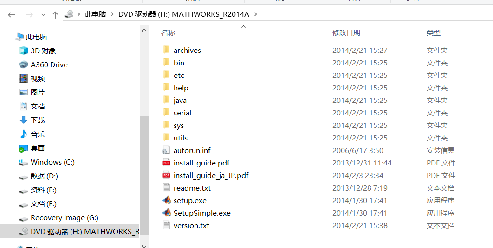</p>
<ol start="2">
<li>执行<strong>setup.exe</strong>之后会进入以下界面，之后点击“<strong>使用文件安装秘钥</strong>”。</li>
</ol>
<p></p>
<ol start="3">
<li>之后会出现以下界面，选择“<strong>我没有文件安装秘钥，帮助我执行后续步骤</strong>”。然后点<strong>下一步</strong>出现许可协议点击“<strong>是</strong>”。</li>
</ol>
<p>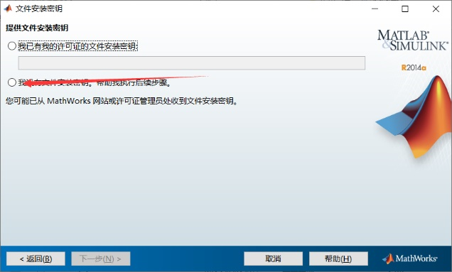</p>
<p>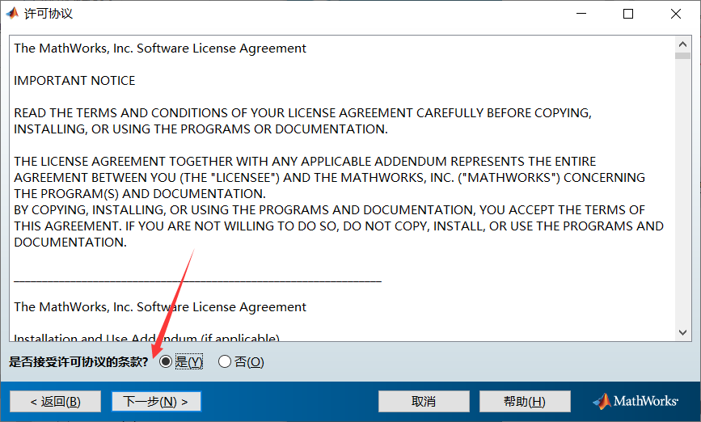</p>
<ol start="4">
<li>然后点击<strong>完成</strong>，至此基本上完成第一项步骤。</li>
</ol>
<p>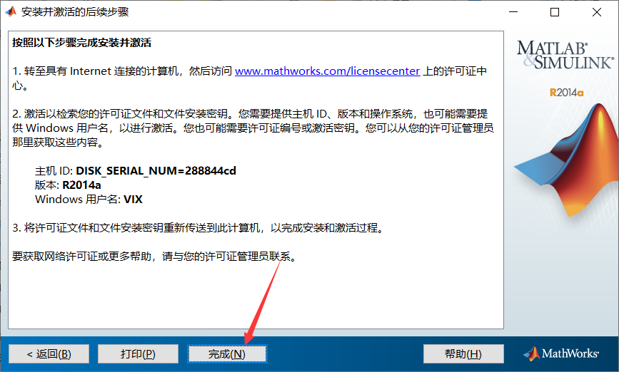</p>
<ol start="5">
<li>在完成上述操作后再次点击setup.exe下面的<strong>SetupSimple.exe</strong>就会出现以下界面。自行选择你的MATLAB需要安装的位置（建议安装到空位比较多的盘，不太建议c盘）。</li>
</ol>
<p>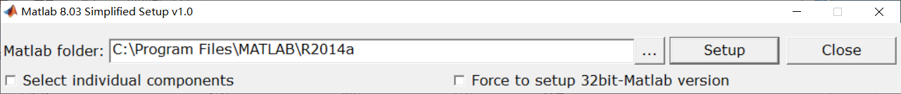</p>
<ol start="6">
<li>点击这个<strong>setup</strong>就弹出以下界面，会自行生成并填写安装秘钥，等待较长时间后即可安装完成</li>
</ol>
<p>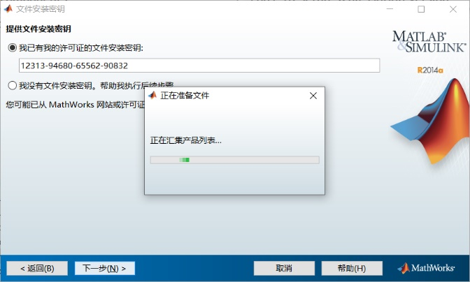</p>
<p>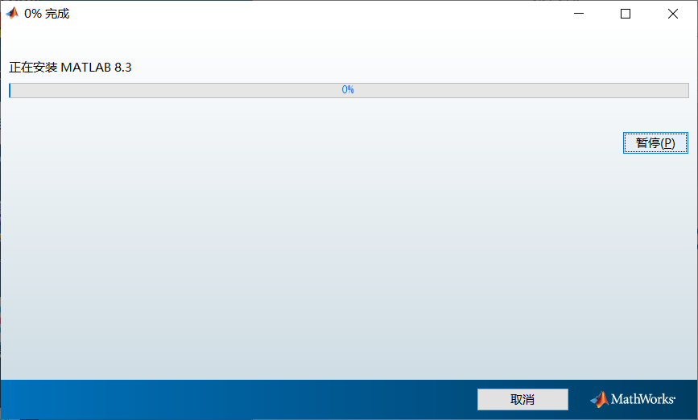</p>
<hr>

<h2 id="安装方法二"><a href="#安装方法二" class="headerlink" title="安装方法二"></a>安装方法二</h2><p>此方法需要下载一份破解文档 : <a href="http://pan-yz.chaoxing.com/share/info/111ed2c90ad028c0" target="_blank" rel="noopener">网盘下载</a></p>
<ol>
<li>直接执行setup.exe</li>
</ol>
<p>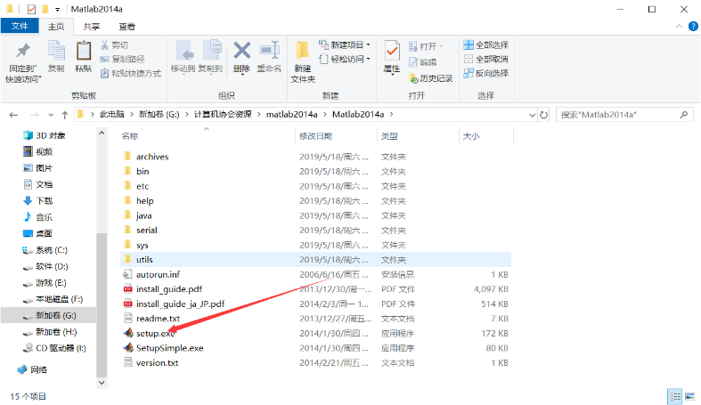</p>
<ol start="2">
<li>点击“<strong>使用文件安装秘钥</strong>”</li>
</ol>
<p>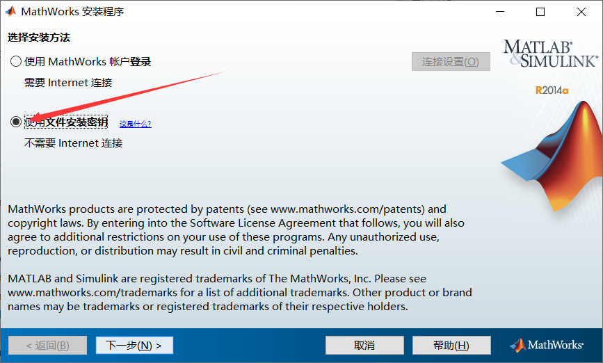</p>
<ol start="3">
<li>这次点击“<strong>我已有我的许可证的文件安装秘钥</strong>”，输入“<strong>11111111111111111111</strong>”（即20个1）。</li>
</ol>
<p>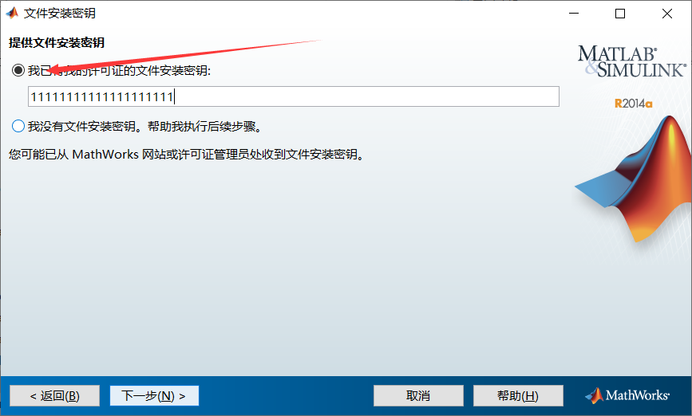</p>
<ol start="4">
<li>自行选择安装位置，根据自己需要选择需要安装的产品。</li>
</ol>
<p>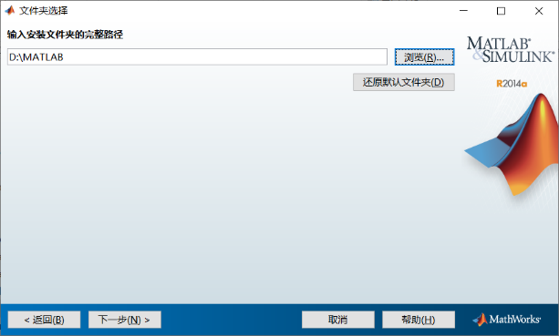</p>
<p>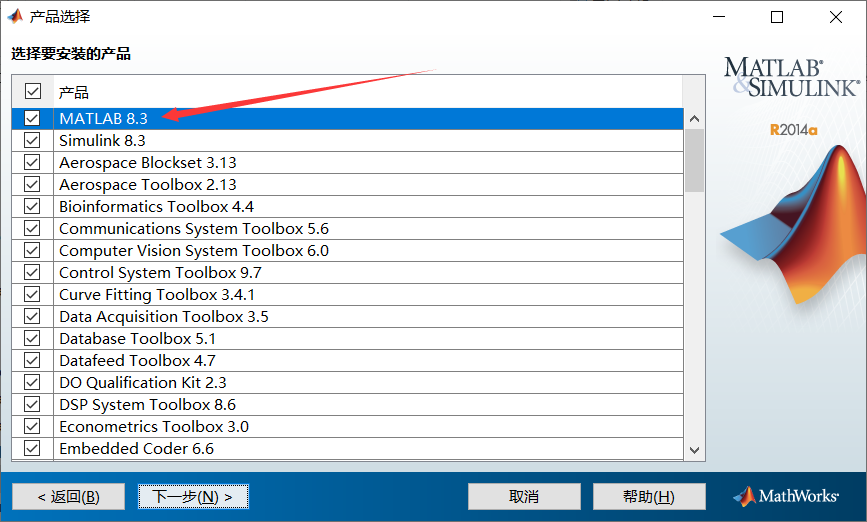</p>
<ol start="5">
<li>安装选项建议两个都勾选</li>
</ol>
<p>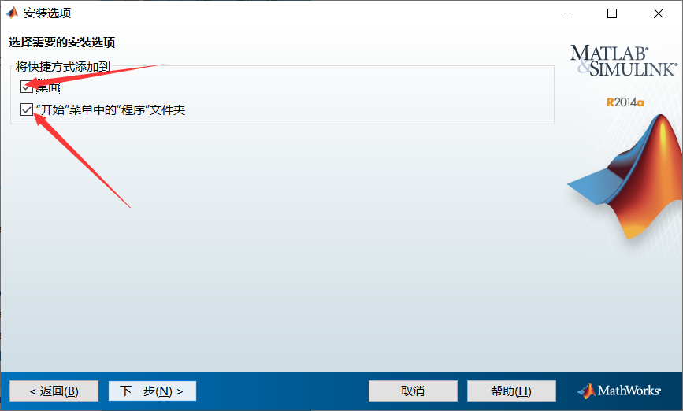</p>
<p>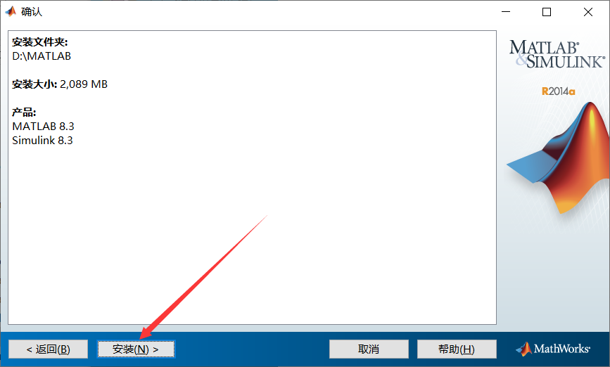</p>
<p>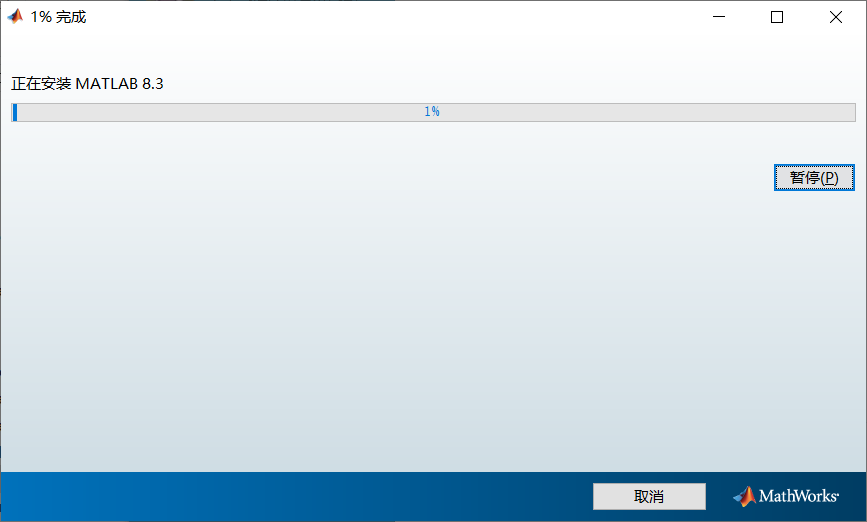</p>
<ol start="6">
<li>安装完成之后解压缩破解文档，在破解文档里里面有<strong>Matlab32</strong>与<strong>Matlab64</strong>两个文件夹，根据你的操作系统进入其中一个文件夹。(64位操作系统进入Matlab64、32位操作系统进入Matlab32。如果你不知道你的操作系统是32位还是64位，可以<strong>先进入Matlab64</strong>文件夹并继续该教程，如果破解之后Matlab打不开，再回来选择<strong>Matlab32</strong>重复该教程)</li>
</ol>
<p>进入文件夹后，可以见到一个<strong>bin</strong>文件夹，复制这个文件夹，粘贴到<strong>Matlab的安装目录</strong>，覆盖已有文件，即可完成破解。</p>
<p>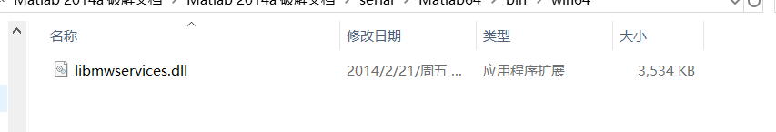</p>
<p>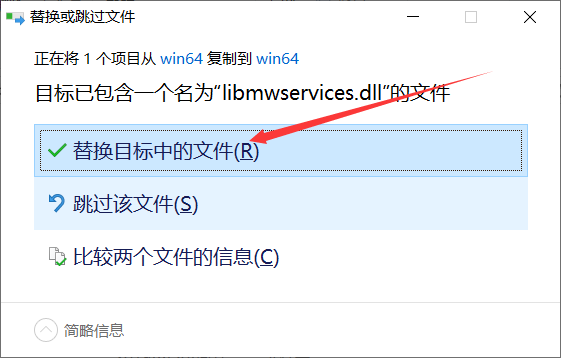</p>
<ol start="7">
<li>最后在安装matlab的过程中有的电脑会出现安装完成后桌面没有出现快捷方式的图标，但是不需要担心，找到你安装matlab的文件打开bin文件夹。</li>
</ol>
<p>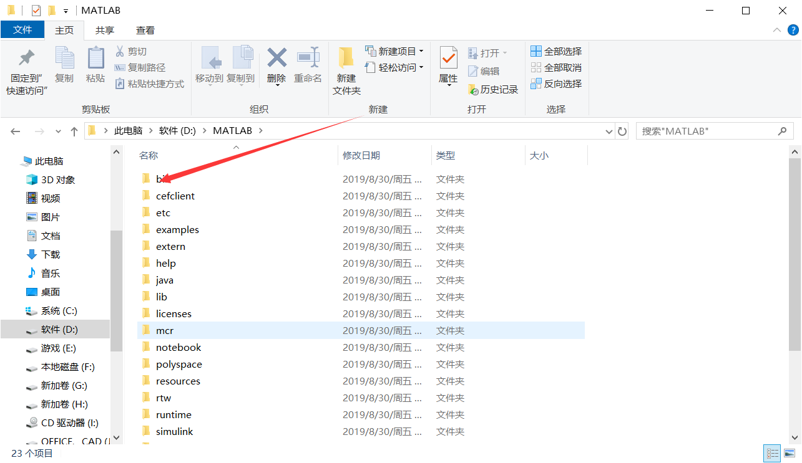</p>
<p>然后就会发现一个matlab.exe,这个就是matlab的程序 ，点击鼠标右键穿件快捷方式，然后复制到左面即可</p>
<p>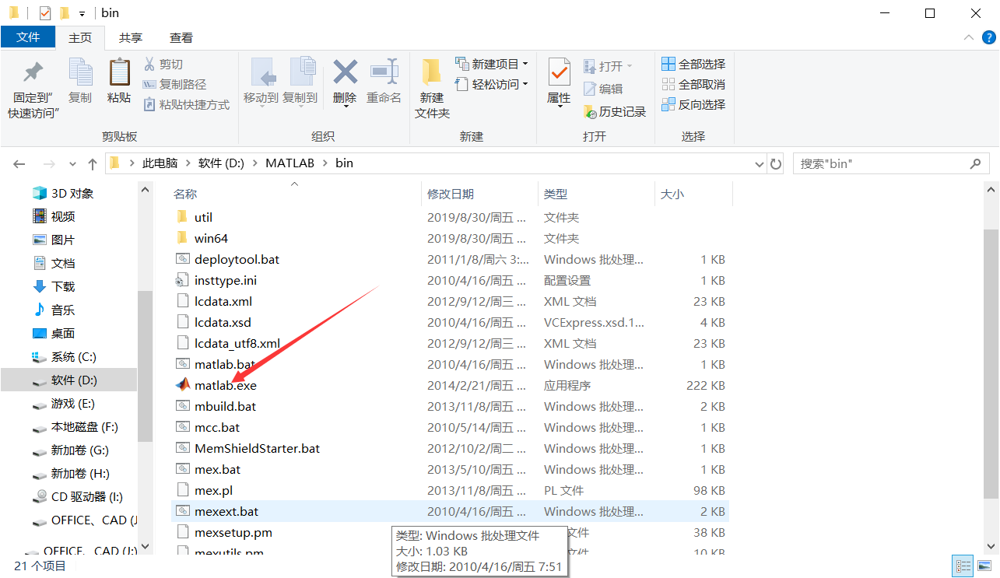</p>
<hr>

<p><a href="https://github.com/cqjtu-acm/article/issues" target="_blank" rel="noopener">文章纠错</a> | 看不懂 | 投稿 | 提建议：477897024 (QQ群)</p>

      
    </div>
    <footer class="article-footer">
      <a data-url="http://help.cqjtuJX.club/2019/08/30/Matlab-2014-安装教程/" data-id="ck06lvxte0004ykwhxr91snio" class="article-share-link">Share</a>
      
      
  <ul class="article-tag-list"><li class="article-tag-list-item"><a class="article-tag-list-link" href="/tags/软件安装/">软件安装</a></li></ul>

    </footer>
  </div>
  
    
<nav id="article-nav">
  
    <a href="/2019/08/31/Win10恢复出厂设置后鼠标一直转圈圈解决方案/" id="article-nav-newer" class="article-nav-link-wrap">
      <strong class="article-nav-caption">Newer</strong>
      <div class="article-nav-title">
        
          Win10恢复出厂设置后鼠标一直转圈圈解决方案
        
      </div>
    </a>
  
  
    <a href="/2019/08/30/重新安装Office家庭学生版/" id="article-nav-older" class="article-nav-link-wrap">
      <strong class="article-nav-caption">Older</strong>
      <div class="article-nav-title">重新安装Office家庭学生版</div>
    </a>
  
</nav>

  
</article>

</section>
        
          <aside id="sidebar">
  
    

  
    
  <div class="widget-wrap">
    <h3 class="widget-title">Tags</h3>
    <div class="widget">
      <ul class="tag-list"><li class="tag-list-item"><a class="tag-list-link" href="/tags/系统问题/">系统问题</a></li><li class="tag-list-item"><a class="tag-list-link" href="/tags/软件安装/">软件安装</a></li></ul>
    </div>
  </div>


  
    
  <div class="widget-wrap">
    <h3 class="widget-title">Tag Cloud</h3>
    <div class="widget tagcloud">
      <a href="/tags/系统问题/" style="font-size: 10px;">系统问题</a> <a href="/tags/软件安装/" style="font-size: 20px;">软件安装</a>
    </div>
  </div>

  
    
  <div class="widget-wrap">
    <h3 class="widget-title">Archives</h3>
    <div class="widget">
      <ul class="archive-list"><li class="archive-list-item"><a class="archive-list-link" href="/archives/2019/09/">九月 2019</a></li><li class="archive-list-item"><a class="archive-list-link" href="/archives/2019/08/">八月 2019</a></li></ul>
    </div>
  </div>


  
    
  <div class="widget-wrap">
    <h3 class="widget-title">Recent Posts</h3>
    <div class="widget">
      <ul>
        
          <li>
            <a href="/2019/09/05/office-2010-2016-校园网下载地址收集整理/">office 2016 2010 校园网下载地址收集整理</a>
          </li>
        
          <li>
            <a href="/2019/08/31/Adobe-Premiere-CC-2019-下载地址/">Adobe Premiere Pro CC 2019 下载地址</a>
          </li>
        
          <li>
            <a href="/2019/08/31/Win10恢复出厂设置后鼠标一直转圈圈解决方案/">Win10恢复出厂设置后鼠标一直转圈圈解决方案</a>
          </li>
        
          <li>
            <a href="/2019/08/30/Matlab-2014-安装教程/">Matlab R2014a 安装教程</a>
          </li>
        
          <li>
            <a href="/2019/08/30/重新安装Office家庭学生版/">重新安装Office家庭学生版</a>
          </li>
        
      </ul>
    </div>
  </div>

  
</aside>
        
      </div>
      <footer id="footer">
  
  <div class="outer">
    <div id="footer-info" class="inner">
      &copy; 2019 计算机协会<br>
      Powered by <a href="http://hexo.io/" target="_blank">Hexo</a>
    </div>
  </div>
</footer>
    </div>
    <nav id="mobile-nav">
  
    <a href="/" class="mobile-nav-link">Home</a>
  
    <a href="/archives" class="mobile-nav-link">Archives</a>
  
</nav>
    

<script src="https://cdn.bootcss.com/jquery/2.0.3/jquery.min.js"></script>


  <link rel="stylesheet" href="/fancybox/jquery.fancybox.css">
  <script src="/fancybox/jquery.fancybox.pack.js"></script>


<script src="/js/script.js"></script>


  </div>
</body>
</html>